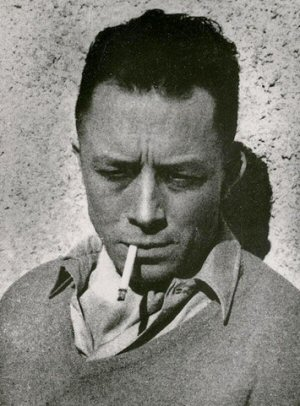

Albert Camus
 Enviar Correo al preciosoAlbert Camus fue un notable novelista y filósofodel siglo XX.
Conocido por sus obras tales y como "El hombre rebelde",
"El extranjero" o "El míto de Sísifo", Albert Camus fue y es
uno de los intelectuales más importantes de su tiempo y el nuestro
Vida
Nació en una familia de colonos franceses (pieds-noirs) dedicados al cultivo de anacardo en el departamento de Constantina.
Su madre,
trabajaba en una finca vitivinícola cerca de Mondovi para un comerciante de vinos de Argel, y era de origen alsaciano, como muchos otros
pieds-noirs que habían huido tras la anexión de Alsacia por Alemania después la guerra franco-prusiana. Movilizado durante la Primera
Guerra Mundial, fue herido en combate durante la batalla del Marne y falleció en el hospital de Saint-Brieuc el 17 de octubre de 1914,
hecho que propició el traslado de la familia a casa de la abuela materna en Argel. Quedó huérfano de padre antes de cumplir el año.
De su progenitor, solo conservó una fotografía y una significativa anécdota: su señalada repugnancia ante el espectáculo de una ejecución capital.
Jorge Gomez
Entre Ríos
Colón
Argentina
- 3416946462
- jorgegomezgerling@gmail.com
Obras notables
- El extranjero
- El mito de Sísifo
- El hombre rebelde
- Calígula
- La peste
- El exilio y el reino
- El estado de sitio
Pensamiento filosófico A través de sus escritos, Camus explora la condición humana de aislamiento dentro de un universo que llega a parecer ajeno, el extrañamiento del ser humano hacia sí mismo, el problema del mal y la fatalidad de la muerte. Se considera que su pensamiento representa la desilusión de los intelectuales en la época de la posguerra. Sin embargo, aunque entendía el nihilismo de muchos de sus contemporáneos, defendía valores como la libertad y la justicia. En sus últimos trabajos, esbozó un humanismo liberal que rechazaba los aspectos dogmáticos del cristianismo y el marxismo.22El hombre siempre se encuentra en una «condición absurda», en «situaciones absurdas». Camus afirmó en 1956, en una entrevista publicada por Le Monde: «No creo en Dios, es verdad. Y, sin embargo, no soy ateo. Incluso me siento inclinado, con Benjamin Constant de Rebecque, a ver en la irreligión algo de vulgar y de..., sí, de deteriorado».2324 Absurdismo Esta idea del absurdo presupone que el ser humano busca un significado del mundo, de la vida humana y de la historia, el cual sustente sus ideales y valores. Se desea la seguridad de que la realidad es un proceso teleológico inteligible, que contiene un orden moral objetivo. Puesto en otras palabras, se busca una certeza metafísica de que la vida es parte de un proceso inteligible direccionado a un objetivo ideal, y que detrás de los valores personales se encuentra el sustento del universo o de la realidad como totalidad.25 Los líderes religiosos y los creadores de sistemas y visiones del mundo metafísicos han tratado de saciar esta necesidad. Pero sus interpretaciones del mundo no se sostienen ante la crítica. El mundo se revela, para un ser humano sensible, sin ningún propósito o significado determinado. El mundo no es racional. De ahí surge el sentimiento del absurdo (le sentiment de l'absurde).26 Hablando estrictamente, el mundo no es absurdo por sí mismo: simplemente es. “El absurdo surge de la confrontación entre la búsqueda del ser humano y el silencio irracional del mundo”.27 Lo llama “nostalgia irracional y humana”, y ocurre cuando nuestra necesidad de significado se quiebra ante la indiferencia del mundo, inamovible y absoluta. Por lo tanto, el absurdo no es un estado autónomo; no existe en el mundo, sino que surge del abismo que nos separa de él.28 Este sentimiento puede manifestarse de distintas maneras, como por ejemplo: la percepción de la indiferencia de la naturaleza ante los valores y los ideales del ser humano, la consciencia de la fatalidad de la muerte, o el impacto provocado por la percepción del sinsentido de la cotidianidad.29 Camus exhorta a la exploración de este silencio como búsqueda de verdad, aunque en ella se vuelva más latente el silencio del mundo. “Buscar lo que es verdad no es buscar lo que se desea”.30 Camus trata frecuentemente el problema del suicidio. Esta acción, sin embargo, no es la acción recomendada por Camus. En su opinión, el suicidio es rendirse ante el absurdo. La dignidad humana se rebela cuando se vive en la consciencia del absurdo, y aun así uno se rebela contra él a través de un compromiso con sus propios ideales. Él deja claro que el hecho de que cada persona pueda encontrar sus propios valores, no quiere decir que se recomiende el crimen: “Si todas las experiencias son indiferentes, la experiencia del deber es tan legítima como cualquier otra. Uno puede ser virtuoso por capricho”.31 Camus sostenía el origen humano de todo juicio moral. Él, aunque no aceptaba para sí mismo el cristianismo, lo reconocía como una forma válida de significar al mundo; rechazaba la institución de la Iglesia, a la cual consideraba alejada de su inspiración original. Sin embargo, pensaba que la moralidad, en tanto que humana, debe separarse del pensamiento religioso: “Cuando el hombre somete a Dios a un juicio moral, lo mata en su corazón”.32 Estaba convencido de que el hombre no puede vivir sin valores; si uno elige vivir, por ese mismo hecho afirma un valor, el que la vida vale la pena de ser vivida o que puede hacerse digna de ser vivida.33 La filosofía de la revuelta Camus tenía una fuerte preocupación por la libertad humana, la justicia social, la paz y la eliminación de la violencia. El ser humano se puede rebelar contra la explotación, la opresión, la injusticia y la violencia, y por el mismo hecho de su rebeldía afirma los valores en cuyo nombre se vuelve rebelde. Una filosofía de la revuelta, por lo tanto, tiene una base moral, y si esta base es negada, ya sea explícitamente o en nombre de cierta abstracción como el movimiento de la historia, lo que comienza como rebeldía y expresión de la libertad, se torna en tiranía y en la supresión de esta.34 Para Camus, al igual que la rebeldía, toda acción política debe tener una base moral sólida.35 Estaba convencido de que el sentimiento del absurdo, tomado por sí mismo, puede ser usado para justificar cualquier cosa, incluido el crimen o el asesinato. “Si uno no cree en nada, y nada tiene sentido, si no podemos encontrar ningún valor, todo está permitido y nada es importante [...]. Uno es libre de atizar el fuego crematorio o dar la vida al cuidado de los leprosos”.36 La rebeldía presupone el compromiso hacia ciertos valores, los cuales se pueden asumir a pesar de la consciencia de que son una creación humana. A pesar de que se sepa que son una construcción, cuando uno se rebela ante la opresión o la injusticia, uno asume los valores de libertad y justicia. En otras palabras, en Camus el absurdo cósmico tiende a quedar en segundo plano; de su pensamiento surge un idealismo moral, el cual insiste en libertad y justicia para todos. Él busca crear consciencia de la opresión que se oculta en los ideales y en los sistemas de pensamiento que se dan a conocer como la verdad esencial del mundo.37 La rebelión es, para Camus, entonces, una de las dimensiones esenciales del hombre. «A menos que huyamos de la realidad, estamos obligados a encontrar en ella nuestros valores. ¿Se puede, lejos de lo sagrado y de sus valores absolutos, encontrar la regla de una conducta? Tal es la pregunta que plantea la rebelión».38 El hombre rebelde es «el hombre situado antes o después de lo sagrado, y dedicado a reivindicar un orden humano en el que todas las respuestas sean humanas, es decir, razonablemente formuladas».39 Así pues, la rebeldía es opuesta a lo sagrado en el sentido de que en este funciona a través de certeza, pero por el carácter no esencial y humano de los valores, la rebeldía se basa en la interrogación.40 Camus se mostraba en contra de la sociedad burguesa, pero sostenía que la rebeldía contra el orden existente puede llevar a la opresión. Pensaba que el ser humano no puede jugar el papel de espectador de la historia como totalidad, pero que ninguna empresa histórica es más que un riesgo en el que se ofrece cierto grado de justificación racional.41 Así que, si el nihilismo absoluto puede ser usado para justificar cualquier cosa, el racionalismo absoluto puede ser usado para lo mismo: “No hay diferencia entre estas dos actitudes. Desde el momento en que son aceptadas, la tierra se convierte en desierto”.42 Por lo tanto, ninguna acción política puede usarse para justificar los excesos de una posición absolutista. Matar y oprimir en nombre del movimiento de la historia o de algún futuro ideal son injustificados. Camus buscaba alejarse de las posturas absolutas y buscar la moderación, ya que “la libertad absoluta es el derecho que usan los más fuertes para dominar y prolongar la injusticia”, así como “la justicia absoluta se alcanza a través de la supresión de toda contradicción: por lo tanto, destruye la libertad”.43 Entonces, es en nombre de los seres humanos vivos y no en nombre de la historia o de algún ideal de vida futura que se realiza la rebeldía contra la injusticia y la opresión: “Toda generosidad hacia el futuro reside en darlo todo al presente”.44 Su filosofía de la revuelta está principalmente preocupada por los valores morales y el desarrollo de una responsabilidad moral; él insiste en que, aunque el rebelde debe actuar porque cree que es lo correcto, también puede actuar reconociendo que podría estar equivocado. Pensaba que el comunismo no pensaba en esta posibilidad, y buscaba, más bien, una sociedad abierta, en que la pasión por la revuelta y el espíritu de moderación estén en tensión constante. Siempre, sin embargo, dio prioridad a la reducción de la violencia.45 Lo anterior vuelve problemática dicha fidelidad o compromiso hacia los ideales personales. ¿Cómo mantener el compromiso hacia ellos cuando se sabe que se puede estar equivocado? Camus pensaba que el origen de la fidelidad se encuentra en la consciencia de que un mundo sin significado lleva a la humanidad a luchar contra este vacío, y que se necesita fuerza, sacrificio y energía para llevar a cabo esta revuelta.46 De esta protesta esencial surge la solidaridad y el compromiso con los valores personales, ya que «el hombre necesita exaltar la justicia para luchar contra la injusticia, y crear felicidad para rebelarse contra un universo de infelicidad».47 Para Camus, sin embargo, «la fidelidad no es, por sí misma, una virtud».48 Como base de la rebeldía social y política, entonces, se encuentra la rebeldía metafísica, definida como «el movimiento por el cual un hombre se alza contra su condición y la creación entera».49 El rebelde metafísico invoca de manera implícita un juicio de valor en nombre del cual niega su aprobación a la condición que le ha sido impuesta. Él se alza contra un mundo destrozado para reivindicar su unidad.50 En el desarrollo del problema del absurdo, de la moralidad y de la revuelta, Camus conjunta el compromiso y una postura de distanciamiento. Este distanciamiento lo hace mantener una actitud crítica frente a distintas formas de poder político y económico; por lo tanto, su rebeldía tenía una base moral, más que política.51 Camus se relaciona con Sartre en el sentido de que ambos defienden el sinsentido del mundo y de la historia humana (pues no hay un objetivo o propósito que es dado independientemente al ser humano); sin embargo, él no es el origen del pensamiento de Camus. Quien puede ser considerado como su influencia principal es Nietzsche. Camus sostenía que este filósofo representaba el advenimiento del nihilismo, y que pudo ver al ser humano como el único ser capaz de apropiarse de este nihilismo.52 Sin embargo, Camus no es considerado meramente nietzscheniano; por un lado, se preocupó por la injusticia en las sociedades de manera más intensa que el filósofo alemán, y por otro, aunque nunca abandonó la idea de que el mundo no tiene un significado último, cada vez se centró más en la idea de rebeldía contra la crueldad y la opresión, lucha que opacó a la revuelta contra la condición humana como tal, concebida como falta de sentido.53